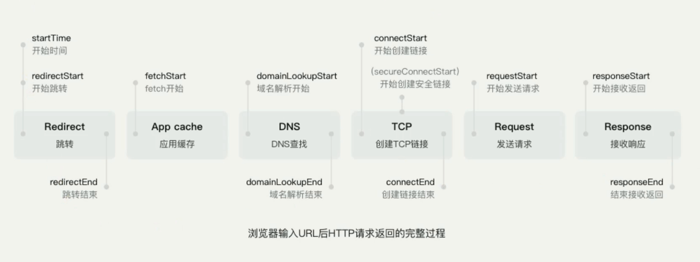
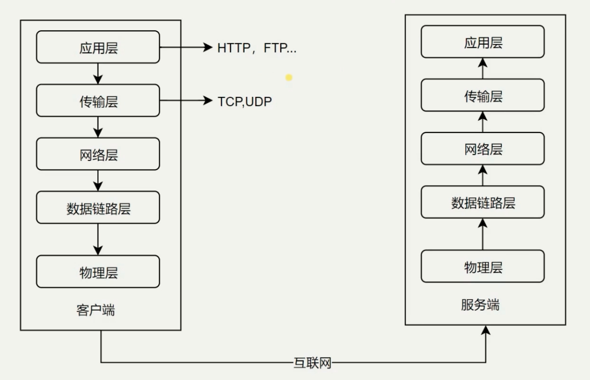

HTTP 协议
Create by jsliang on 2018-12-24 08:18:27
Recently revised in 2018-12-24 08:18:31
一 目录
不折腾的前端，和咸鱼有什么区别
| 目录 |
|---|
| 一 目录 |
| 二 前言 |
| 三 正文 |
二 前言
什么时候涉及 HTTP 协议？
输入 URL 打开网页
- Ajax 获取数据
img 标签加载图片
什么是 HTTP 协议？
HTTP 协议是 Hyper Text Transfer Protocol（超文本传输协议）的缩写，是用于从万维网（WWW：World Wide Web ）服务器传输超文本到本地浏览器的传送协议。
- HTTP 协议是一个基于 TCP/IP 通信协议来传递数据（HTML 文件, 图片文件, 查询结果等）。
- HTTP 是一个属于应用层的面向对象的协议，由于其简捷、快速的方式，适用于分布式超媒体信息系统。它于 1990 年提出，经过几年的使用与发展，得到不断地完善和扩展。目前在 WWW 中使用的是 HTTP/1.0 的第六版，HTTP/1.1 的规范化工作正在进行之中，而且 HTTP-NG(Next Generation of HTTP) 的建议已经提出。
- HTTP 协议工作于客户端-服务端架构为上。浏览器作为 HTTP 客户端通过 URL 向 HTTP 服务端即 WEB 服务器发送所有请求。Web 服务器根据接收到的请求后，向客户端发送响应信息。
三 正文
浏览器输入 URL 后 HTTP 请求返回的完整过程

经典五层模型
- 物理层 - 主要作用是定义物理设备如何传输数据
- 数据链路层 - 在通信的实体间建立数据链路连接
- 网络层 - 为数据在节点之间出书创建逻辑链路
- 传输层 - 1. 向用户提供可靠的端到端（End-to-End）服务；2. 传输层向高层屏蔽了下层数据通信的细节
- 应用层 - 构建于 TCP 协议之上，为应用软件提供了很多服务

jsliang 的文档库</a> 由 梁峻荣 采用 知识共享 署名-非商业性使用-相同方式共享 4.0 国际 许可协议 进行许可。
基于 https://github.om/LiangJunrong/document-library 上的作品创作。
本许可协议授权之外的使用权限可以从 https://creativecommons.org/licenses/by-nc-sa/2.5/cn/ 处获得。